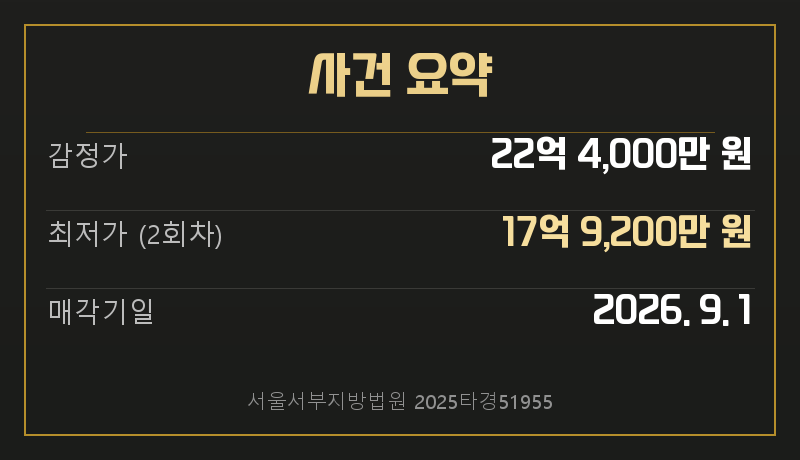
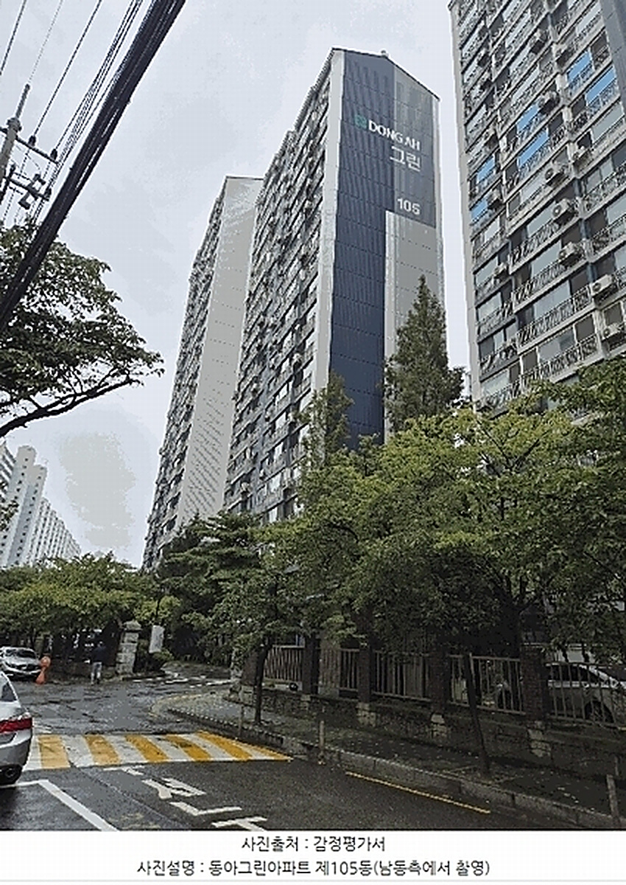
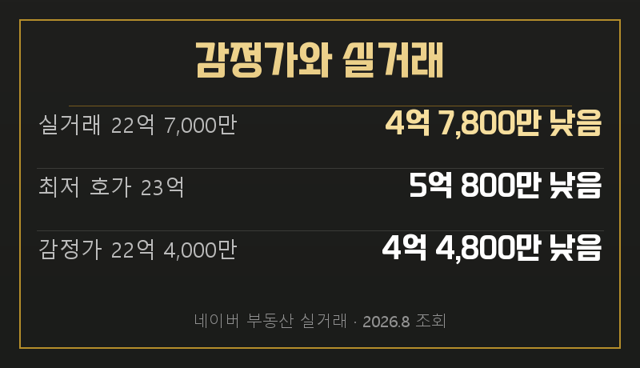
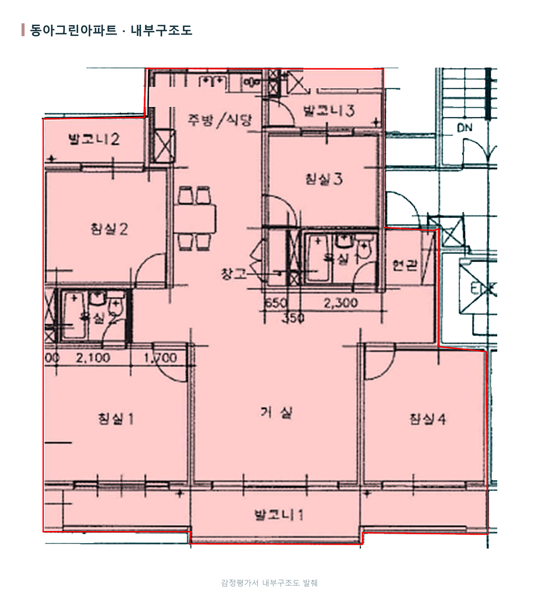
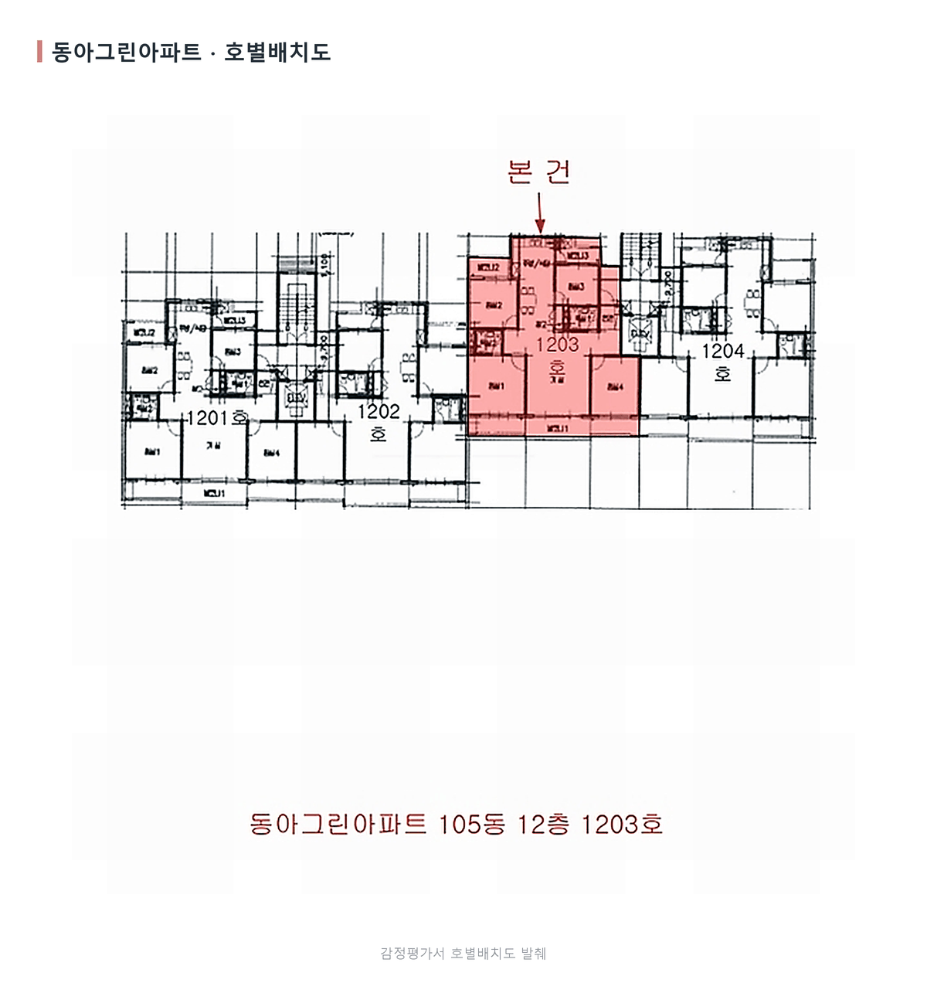
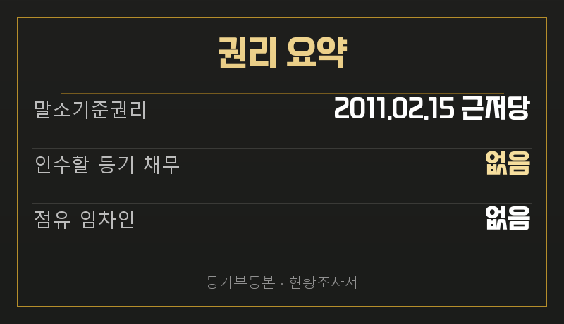
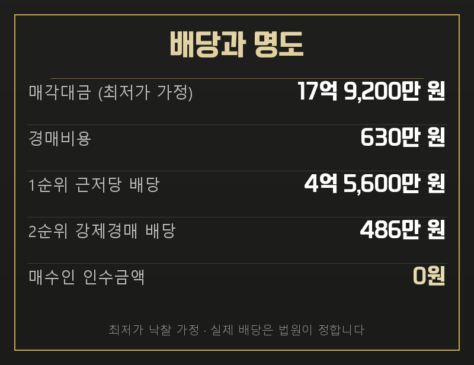
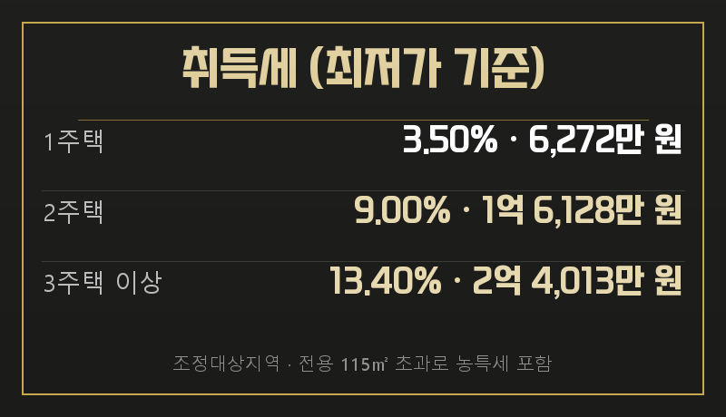

서울서부지방법원 2025타경51955
동아그린아파트 105동 1203호
전용 115㎡ 대형평형
2회차 최저가 17억 9,200만 원
용산구 이촌동 동아그린아파트 105동 1203호가 경매로 나왔습니다. 전용 115㎡ 대형평형이라 단순 임대 회전보다 가족 단위 실거주와 장기 보유 계획을 먼저 보셔야 합니다.
감정가 22억 4,000만 원에서 한 차례 유찰돼, 지금 보시는 17억 9,200만 원이 2회차 최저가입니다. 같은 평형 실거래 22억 7,000만 원과의 차이부터 살펴보겠습니다.


| 관할 | 서울서부지방법원 |
|---|---|
| 소재지 | 서울 용산구 이촌동 411 동아그린아파트 105동 1203호 |
| 면적 | 전용 114.96㎡ (34.78평) · 공급 43평형 · 대지권 36.79㎡ |
| 감정가 | 2,240,000,000원 |
| 최저가 | 1,792,000,000원 · 감정가 대비 20% 저감 |
| 감정 기준시점 | 2025년 10월 4일 |
| 매각기일 | 2026년 9월 1일 |
같은 평형 매매 실거래는 최근 두 달 한 건으로, 2026년 7월 10일 22억 7,000만 원에 체결됐습니다. 네이버 호가는 23억 원부터 등록돼 있습니다.
거래가 적은 대형평형은 한 건을 단지 전체 가격처럼 보시면 안 됩니다. 층과 계약 시점, 본건의 개별 조건까지 함께 보셔야 현재 시세를 가늠할 수 있습니다.

거래 한 건의 가격만 따라가시면 안 됩니다.
최저가는 입찰 시작금액이고 실거래는 한 건뿐입니다. 동·층 조건과 매각기일까지 추가되는 거래를 확인한 뒤 응찰 금액을 정하셔야 합니다.
현대한강아파트와의 통합 재건축이 추진되고 있습니다. 이촌2동은 사업체 약 478개, 종사자 약 1,044명으로 주거 성격이 강하고, 학원가의 교육 수요가 실거주 수요를 받치는 지역입니다.
통합 재건축은 장점 한 줄로 끝낼 변수가 아닙니다. 추진 단계와 일정, 보유 기간의 자금 부담을 함께 확인한 뒤 현재 가격에 어느 정도 반영할지 판단하셔야 합니다.


2011년 2월 15일 설정된 채권최고액 4억 5,600만 원의 근저당이 말소기준권리입니다. 2025년 9월 25일까지 뒤에 접수된 등기는 후순위라 매각으로 모두 소멸합니다.

현황조사서상 점유 임차인은 없고 소유자가 점유한 것으로 추정됩니다. 인수 보증금은 실투입에 넣지 않지만, 인도 일정이 자동으로 확정되는 것은 아닙니다.
입찰 전 인도 일정도 비용표에 넣으셔야 합니다.
소유자 점유 사건도 협의 시점에 따라 일정이 달라집니다. 입찰 전 전문가와 상담해 소요 기간을 계산에 반영하시기 바랍니다.

최저가로 낙찰되면 경매비용 630만 원을 뺀 17억 8,570만 원이 배당 재원이 됩니다. 우리은행 근저당이 4억 5,600만 원, 경매를 신청한 채권자가 486만 원을 가져가고 13억 원 넘는 금액이 배당되고 남습니다. 채권보다 담보 가치가 훨씬 큰 사건이라 대항력 있는 임차인이 없는 한 매수인이 인수할 금액은 없습니다.
다만 최저가에 낙찰된다는 가정이고 실제 배당은 법원이 정합니다. 당해세나 뒤늦게 들어온 압류처럼 지금 자료에 없는 채권이 있으면 순위가 달라질 수 있습니다.
같은 평형 전세 실거래는 최근 석 달 두 건으로, 6억 8,250만 원에서 7억 350만 원 사이입니다. 가장 최근 계약은 2026년 7월 18일 6억 8,250만 원이고, 호가 최저가 기준 전세가율은 약 30%입니다.
월세는 2026년 3월 23일 보증금 5,000만 원에 월 260만 원 조건이 확인됩니다. 전세가율은 매매가를 정하는 잣대가 아니라 보유 중 자기자금 규모를 가늠하는 자료로 보셔야 합니다.
실투입에는 낙찰가와 취득세, 명도 비용, 체납관리비가 들어갑니다. 취득가액이 9억 원을 넘는 구간이므로 실제 취득가액과 보유 주택 수, 입찰 시점의 정책을 기준으로 취득세를 확인하셔야 합니다.
잔금 일정에 맞춰 대출 한도와 현금 예산을 준비하고, 실거주라면 자기자금 비중을, 임대라면 전세와 월세 가운데 어느 쪽으로 운용할지 정한 뒤 보유 기간의 현금흐름을 계산하셔야 합니다.
보유 뒤 처분까지 계획하신다면 세제 일정도 확인 대상입니다. 부동산을 팔고 연금에 납입할 때 적용되는 양도세 감면 혜택이 내년 말 종료된다는 보도가 있었습니다.

최저가로 낙찰됐을 때의 취득세입니다. 1주택이어도 6,272만 원이고, 2주택이면 1억 6,128만 원, 3주택 이상이면 2억 4,013만 원입니다. 취득가액이 9억 원을 넘어 표준세율이 3%이고, 전용 115㎡로 85㎡를 넘어 농어촌특별세가 더해집니다.
보유 주택 수 한 채 차이로 1억 원 가까이 갈립니다. 실투입을 계산하기 전에 본인 보유 현황부터 정리해 두셔야 합니다. 낙찰가가 올라가면 세액도 함께 올라갑니다.
현재 최저가는 확인된 실거래와 호가보다 낮고, 등기에서 넘어오는 부담도 없습니다. 다만 대형평형의 거래 표본이 한 건이고 통합 재건축이라는 장기 변수가 있으므로, 입찰 당일 경쟁뿐 아니라 보유 계획까지 맞아야 합니다.
THE FIN은 2014년부터 경매 현장에 있었고, 법원 매수신청대리인으로 등록된 중개법인입니다. 권리분석·시세조사·입찰 동행·잔금 대출·명도를 단계별 담당자가 함께 진행합니다.
이 물건으로 입찰을 생각하고 계시면 매각기일 전에 연락 주십시오. 최신 계약과 재건축 변수, 자금 일정과 세금 항목을 이 사건에 맞춰 함께 정리해 드립니다.
이이사님이 주신 초안과 이 원고가 어디서 갈렸는지 적어 둡니다. 무엇을 고쳤는지 보시고 피드백 주시면 다음 회차에 반영합니다.
아래는 우리 배관 사정입니다(원고 내용과 무관).
정본 자산 경로가 막혀 원고와 근거 있는 카드만 게시 형식으로 조립했습니다.